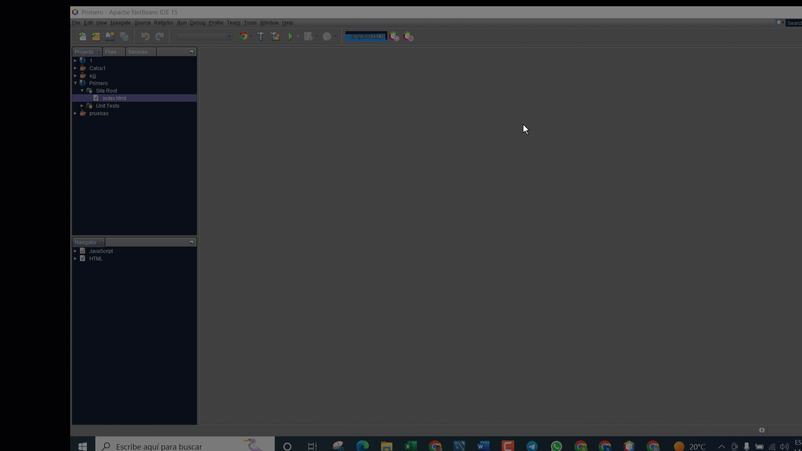

Entorno de desarrollo
Si bien se puede programar en cualquier editor de texto, existen programas específicos para escribir código, estos programas se conocen como IDEs, su nombre en español es entorno integrado de desarrollo. Básicamente son editores de texto diseñados para escribir código fuente en determinado lenguaje, existen muchos, algunos específicos para un solo lenguaje, otros configurables para distintos lenguajes de programación.
En este curso utilizaremos Netbeans, es un entorno amigable, configurable y dispone de muchas ayudas que hacen más simple iniciar a programar.
Logo Netbeans
Lectura facilitada
Se puede escribir en un editor de texto simple.
En el curso se propone un entorno integrado de desarrollo llamado Netbeans.
Este programa permite crear programas en Javascript al tiempo que nos brinda ayudas en la escritura.
Apoyo visual
